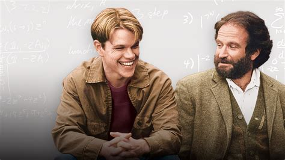

Will Hunting is a janitor at MIT who secretly solves a graduate-level math problem left on a hallway blackboard. To avoid prison after a run-in with the law, he agrees to study under a professor and see a therapist, Sean Maguire — the first person willing to look past the walls he has built around himself.
Won Oscars for Best Supporting Actor (Robin Williams) and Best Original Screenplay (Damon & Affleck).